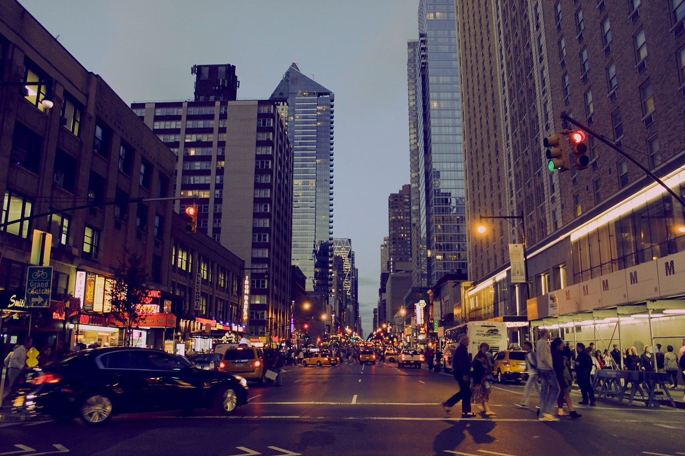

New & Trending in NYC
Something exciting happens every day (and every minute) in New York City, and below you’ll find some of the best ways to experience the five boroughs’ energy right now. New attractions and restaurants, top sports and nightlife events, the hottest shops and seasonal guides—we’ve got everything you need to make the most of this moment in the world’s greatest city.
